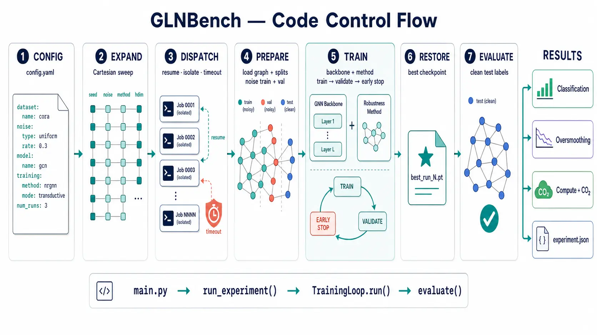

When labels lie, the graph spreads it.
A unified, reproducible benchmark for graph neural networks under noisy supervision. We benchmark 12 robustness methods plus a Standard baseline, then stress-test them where it counts — strong backbones, heterophily, scale, and cost — not just clean citation graphs.
Noise doesn't stay where you put it.
Unlike i.i.d. models, a GNN passes messages along edges, so supervision at one node can influence learned representations throughout its neighbourhood. Existing benchmarks answer this on small homophilic citation graphs with one backbone. We ask the harder questions: does robustness survive a strong, wide backbone? does it hold under heterophily and at scale? and what does it cost?
Configure → run → measure, in a single pipeline.
Every configuration flows through the same path: apply the selected label-noise process, assemble a backbone with a robustness method, train with early stopping while probing oversmoothing, then evaluate on the clean test split.

The axes we vary.
We measure three things at once.
Accuracy alone hides why a method wins or fails. Each run reports how it classifies, how its representations behave, and what it costs.
Classification
- Accuracy · macro-F1
- Precision · Recall
- ROC-AUC
- clean / mislabelled / recovered splits
Oversmoothing
- NumRank · Erank
- EDir · EProj
- MAD
- rank-collapse as a failure signal
Compute & carbon
- FLOPs — train & inference
- wall-clock time
- CO₂ via CodeCarbon
- the price of robustness
Robustness is conditional — not a property you inherit.
Reported gains do not automatically transfer. The benchmark surfaces failure modes that only appear off the usual small citation graphs.
It depends on the backbone.
On the standard GCN/GAT backbones most methods beat Standard under noise (ERASE +14.3, RTGNN +9.0, GraphCleaner +8.4 on Cora/uniform). On a strong, wide GCN* the gap compresses toward the baseline — or the method fails outright.
Geometry-based methods collapse at width. rank ≈ 1
ERASE and UnionNET fall to chance train accuracy on the 512-wide backbone — clean and noisy alike — as their embedding rank collapses to one. Healthy at h64, they degenerate at h512. Documented, not patched.
Structure amplifies label noise.
Message-passing-induced rank collapse is a measurable mechanism through which topology degrades representations under noise — visible directly in the oversmoothing metrics, not just the accuracy.
The price varies by orders of magnitude.
GNNGuard recomputes cosine attention every epoch (≈170× Standard per epoch); NRGNN's edge predictor runs out of memory on large graphs. Six of thirteen methods do not scale past mid-sized graphs.
Run the whole thing in three steps.
Pinned dependencies, a Cartesian sweep syntax in one YAML, and incremental execution that resumes where it stopped. Prefer a guided start? The Experiment Builder creates and validates the configuration for you.
# 1 · install (pinned: torch 2.2.1, PyG 2.5.3) python3 -m pip install -r requirements.txt # 2 · point config.yaml at a dataset / noise / method # £[cora, roman-empire] expands to a sweep grid # 3 · run — resumes automatically, aggregates seeds python3 main.py -c config.yaml # results → results/<experiment>/experiment.json
- One config, many runs. The £[…] sweep syntax turns a single YAML into a Cartesian grid over datasets, noise types, rates, and methods.
- Incremental & resumable. Only missing runs execute; bump --num-runs from 5 to 10 and only runs 6–10 fire.
- Faithful by default. Each method mirrors its official source; the no-oracle adaptations we make are documented, not silent.
If it helps your work, please cite us.
@unpublished{gln-benchmark,
TITLE = {{Survey and Benchmark of Graph Learning under Label Noise}},
AUTHOR = {Wani, Farooq Ahmad and Purificato, Antonio and Bucarelli, Maria Sofia and Di Francesco, Andrea Giuseppe and Corelli, Michael and Pryymak, Oleksandr and Silvestri, Fabrizio},
URL = {https://hal.science/hal-05698305},
NOTE = {working paper or preprint},
YEAR = {2026},
MONTH = Jul,
PDF = {https://hal.science/hal-05698305v1/file/HAL_survey.pdf},
HAL_ID = {hal-05698305},
HAL_VERSION = {v1},
}